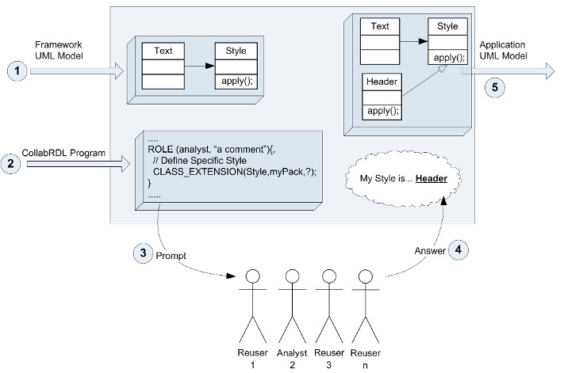

CollabRDL
By Toacy Cavalcante |18 October 2015
CollabRDL extends RDL to support collaborative reuse activities. RDL, which is the acronym for Reuse Description Language, is a language used to represent the process of object-oriented framework instantiation and support software reuse, which aims at explicitly representing the processes that specify reuse activities (Oliveira et al., 2007). Figure 1 shows an overview illustrating how the proposed extension changes the traditional reuse process in RDL by introducing, in contrast with RDL, which assumes a single reuser, a set of reusers who will execute group-related activities. Moreover, Figure 1 shows how the reusers are engaged in a five-step collaborative reuse process.
- how much artifacts are manipulated by software engineer and
- the underlying software process that is being executed.
Figure 1 - CollabRDL overview.
First, the reusers provide UML models of a particular framework to be instantiated. Typically, these input models have some classes, along with their methods, that represent the main concepts and behavior that will be reused, e.g., the classes Text and Style, and their methods apply().
Then, as a second step, a CollabRDL program is provided, which involves both the traditional RDL commands and new commands, including ROLE, PARALLEL, and DOPARALLEL. Next, the reusers interact with each other to provide a particular instance of the input framework models. It is important to highlight that this collaboration cannot be undertaken by using the existing RDL language. Finally, an output application is generated.
CollabRDL commands
The existing set of RDL commands (Oliveira et al., 2007) is complemented with the role, parallel, and doparallel commands in order to define the first version of CollabRDL, which allows developers to represent parallel activities and assign them to groups of reusers.
Role Command
Code 1 shows the syntax of the new ROLE command in CollabRDL. This command is used to assign activities to groups. Thus, at runtime, all activities that need user intervention and are in the block bounded by braces shall be delegated to reusers in the analyst group shown as the first parameter, and the information " Only two-dimensional figures are allowed!" is provided as an output. In this way, a member of the analysis group can be assigned to execute the next activity.
ROLE (analyst, "Only two-dimensional figures are allowed!"){
shapeClass = CLASS_EXTENSION(Shape, packA,"?");
m = METHOD_EXTENSION(Shape,shapeClass,addConnectionAnchor);
ADD_CODE(shapeClass,m,"return new ChopboxAnchor(iFigure);");
m = METHOD_EXTENSION(Shape,shapeClass,getFigure);
ADD_CODE(shapeClass,m,"return new IFIGURE_SUBCLASS);");
m = METHOD_EXTENSION(Shape,shapeClass,getIcon);
ADD_CODE(shapeClass,m,"return createImage(\"NEW_SHAPE.gif\");");
...
}
Code 1 - ROLE command.
Parallel Command
Code 2 shows the PARALLEL command used to group blocks of commands that can be executed in parallel. This command implements restrictions related to concurrency, synchronization of activities, and allocates activities to actors as a coordination element. The first FLOW block indicates that the reuser (coordinator) will delegate interactive activities, which are shown in braces ("{" and "}") to the analyst group, and that a message with specific instructions is provided through the second parameter, such as in the case of the ROLE command.
PARALLEL {
FLOW (analyst, “A comment!”){
A;
}
FLOW (designer, “Other comment!”){
B;
}
}
Code 2 - PARALLEL command.
Moreover, without waiting for someone else in the analyst group to perform the activities in the first FLOW block, the reuser (coordinator) may delegate activities in the second FLOW block to a group of designers. The right-hand braces that close the PARALLEL command ("}") indicate that the reuser wait for the execution of all activities in both FLOW blocks to finish in order to proceed with the reuse process. The PARALLEL command allows two or more FLOW blocks.
Doparallel Command
Code 3 expresses that, at runtime, an activity A will be assigned to an analyst group and without waiting for its end, the question “Run the block again?” will be displayed. If the answer is positive, another instance of activity A will be assigned to the analyst group; otherwise, the flow will move to the end of DOPARALLEL, the semicolon (“;”), which will wait for the completion of all instances of activity included in the DOPARALEL command block which, in this example, are instances of the activity A.
DOPARALLEL{
ROLE (analyst, “A comment.”){
A;
}
}WHILE (“Run the block again?”);
Code 3 - DOPARALLEL command.
CollabRDL to BPMN
The runtime CollabRDL-Activiti-Explorer is based on the workflow and Activiti business processes manager (Activit, 2012). It uses the Activiti environment and functionality to manipulate the RDL core artifacts in UML. To use this execution environment, we need to convert the process described in CollabRDL to XML format with Activiti-BPMN markings.
CollabRDL commands to BPMN
| CollabRDL Commands | CollabRDL | BPMN |
|---|---|---|
| Role | Role example Role example1 | Role example Role example2 |
| Parallel | Parallel example Parallel example1 | Parallel example Parallel example2 |
| Doparallel | Doparallel example Doarallel example1 | Doparallel example Doarallel example2 |
Case Study
We present in this section a realistic case study in which two working groups collaboratively performed reuse activities for instantiating a mainstream Java framework, OpenSwing (OpenSwing 2013). In this context the commands ROLE, PARALLEL and DOPARALLEL are evaluated with respect to their functionality in order to realize the reuse activities in team and in parallel when possible. The questions for this objective are 1 – Can the ROLE command offer a block of activities to a group? 2 – Can the PARALLEL command create instances of activities block for running in parallel? 3 – Can the DOPARALLEL command create threads of the same block of activities? The following metrics are used to answer these questions: 1 – Number of activities contained in activities block; 2 – Number of roles; 3 – Number of flows in parallel.